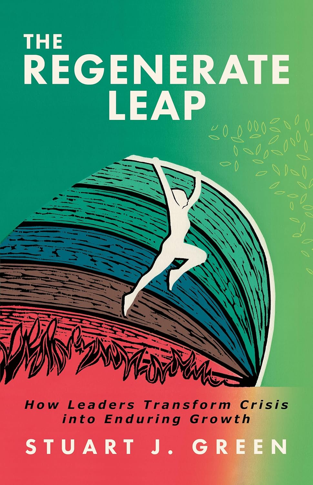

A first-year law student applying lessons from a period of personal adversity to one of the legal profession's coming questions: how AI reshapes access to justice.
I am a student who co-authored a book on leading through disruption — and I'm applying that same thinking to AI and access to justice.
I am an aspiring lawyer reading for an LLB at the University of York, training to qualify as a commercial solicitor with a particular interest in how business will operate as we enter the singularity. These forces are reshaping industries and the entire legal profession — the world is being rebuilt from the ground up, and I intend to have a hand in how it gets designed.
Alongside my studies, I work as an AI implementer at Blue-Green Advisors — building and embedding the artificial intelligence systems that now sit at the centre of how the firm works day to day.
In January 2026, I co-authored The Regenerate Leap — a guidebook to leadership under pressure, drawing on patterns of regeneration observed in natural systems rather than conventional motivational frameworks. The book emerged from a period of personal adversity, written as a structured framework rather than a memoir. The experience clarified something for me about the legal profession: systems matter, but they do not do the thinking for you. Real progress is built at the level of the individual.
It is the lens I now bring to everything I work on: my studies, my work at Blue-Green Advisors, and the question I find myself most drawn to — how AI can open access to justice rather than simply make existing firms more efficient.
Leading the digital transformation of Blue-Green Advisors, a strategic advisory firm working with institutional leaders navigating irreversible change. Responsible for embedding AI into the firm's research, advisory, and client-facing workflows — translating exponential-tech literacy into practical operating change for a working consultancy.
A guidebook to leadership under pressure, examining what it means to lead when stability cannot be assumed. The framework draws on patterns of regeneration observed in natural systems and is grounded in lived experience of systemic disruption rather than theoretical models.
Worked alongside a senior figure operating across regulatory accountability and academic policy during a period of political turbulence in the United States. Direct exposure to issues of governance, the structural role of disclosure in democratic institutions, and the interface between climate, environment, and public health policy.
Internship at one of the leading full-service law firms in the Philippines, operating in a complex cross-border commercial environment. Early exposure to the practical mechanics of international and domestic commercial practice in a major Southeast Asian jurisdiction.
A working sense of commercial awareness, adaptability, and how teams actually function under day-to-day pressure — from formal hospitality at Cambridge to closing a busy café independently.

The Regenerate Leap came out of a period of genuine personal adversity in our family. It started as an attempt to make sense of difficult experiences, and to extract something useful from them rather than letting them remain purely disruptive.
The core of the book is simple, but not easy: how to transform a crisis into your purpose. It explores how you rebuild direction and identity when life throws a curveball.
During that period, I was often frustrated with the legal process. The experience exposed how slow and inefficient it can feel when you are on the inside of a problem rather than studying it from the outside. But it also forced a more important realisation: systems matter, but they do not do the thinking for you.
My experience clarified that real progress is built at the level of the individual. It changed how I look at challenge, and at my own role in responding to it. That way of thinking hasn't left me, and it's something I now bring into my legal studies and everything I'm working towards.
If anything in this resonates, the book is here. The Guardian also shared our story, if you're interested in seeing more of the background. I hope it offers something useful to someone going through their own crisis.
Member of Singularity University's Abundance360 — the executive community headed by Peter Diamandis, focused on exponential technologies, systems thinking, and leadership in periods of rapid disruption. Selected to examine how these forces are reshaping industries and the future of abundance.
Selected for the Emerging Leaders programme at the United Kingdom's largest gathering of leaders shaping Britain's future across quality of life, vibrant places, prosperity, and global perspective.
Active member of YLAL, the network supporting early-career legal aid practitioners through outreach, mentoring and policy work — a community focused on access to justice and the sustainability of the legal aid profession.
Active member of the Law Society and Amnesty International Society at the University of York — engaging with practising lawyers, legal tech sessions, environmental justice events, and human rights advocacy.
Reading Law with a focus on commercial practice and the legal profession's adaptation to AI and exponential technologies. Active member of the York Law Society, Amnesty International Society, and Young Legal Aid Lawyers.
Formative training in analytical reasoning, written argument, and quantitative problem-solving — the three lines of work that still underwrite how I read, write, and think.
Secondary education with a consistently high academic record across the sciences, humanities, and languages.
For correspondence, opportunities, or simply to say hello — I am most easily reached by email.
If you are a student (particularly a law student) looking for an AI toolkit to organise your studies, get in touch. I am happy to share how I use AI as an operating system across university, work at Blue-Green Advisors, side projects, and law-firm applications, and still keep a life. Open to anyone who wants to chat.